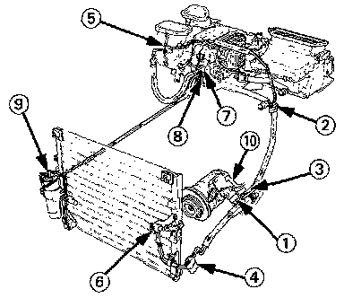

A/C Service Tips and Precautions
REFRIGERANT (R-134a) HANDLING PRECAUTIONS- The air conditioning system uses HFC-134a (R-134a) refrigerant and polyalkyleneglycol (PAG) refrigerant oil (ND-OIL 8: PIN 38899-PR7-AO1), which are not compatible with CFC-12 (R-12) refrigerant and mineral oil.
- Do not use R-12 refrigerant or mineral oil in this system, and do not attempt to use R-12 servicing equipment; damage to the air conditioning system or your servicing equipment will result.
- Only use service equipment that is U.L.-listed and is certified to meet the requirements of SAE J2210 to remove R-134a from the air conditioner system.
CAUTION: Exposure to air conditioner refrigerant and lubricant vapor or mist can irritate eyes, nose and throat, Avoid breathing the air conditioner refrigerant and lubricant vapor or mist.
- If accidental system discharge occurs, ventilate work area before resuming service.
- R-134a service equipment or vehicle air conditioner systems should not be pressure tested or leak tested with compressed air.
WARNING: Some mixtures of air and R-134a have been shown to be combustible at elevated pressures and can result in fire or explosion causing injury or property damage. Never use compressed air to pressure test R-134a service equipment or vehicle air conditioning systems.
- Additional health and safety information may be obtained from the refrigerant and lubricant manufacturers.
A/C SYSTEM SERVICE TIPS
1. Always disconnect the negative cable from the battery whenever replacing air conditioning parts.
2. Keep moisture and dust out of the system. When disconnecting any lines, plug or cap the fittings immediately; don't remove the caps or plugs until just before you reconnect each line.
3. Before connecting any hose or line, apply a few drops of refrigerant oil (ND-OIL 8: P/N 38899-PR7-AO1) to the O-ring.
4. When tightening or loosening a fitting, use a second wrench to support the matching fitting.
5. When recovering the system, use a R-134a refrigerant Recovery/Recycling/Charging System; don't release refrigerant into the atmosphere.
6. Add refrigerant oil (ND-01L8: P/N 38899-PR7-AO1) after replacing the following parts:
NOTE:
- To avoid contamination, do not return the oil to the container once dispensed and never mix with other refrigerant oils.
- Immediately after using the oil, replace the cap on the container and seal it to avoid moisture absorption.
- Do not spill the refrigerant oil on the car; it may damage the paint; if the refrigerant oil contacts the paint, wash it off immediately.
Condenser.........30 ml (1 fl. oz, 1.1 Imp. oz)
Evaporator.........60 ml (2 fl. oz, 2.1 Imp. oz)
Line or hose.....10 ml (1/3 fl. oz, 0.4 Imp. oz)
Receiver/dryer....10 ml (1/3 fl. oz, 0.4 Imp. oz)
Compressor........Calculate as follows:
On compressor replacement, subtract the volume of oil drained from the removed compressor from 140 ml (4-2/3 fl. oz, 5 Imp.oz), and drain the calculated volume of oil from the new compressor: 140 ml (4-2/3 fl. oz, 5 Imp.oz) - Volume of oil from removed compressor= Volume to drain from new compressor.
NOTE: Even if no oil is drained from the removed compressor, don't drain more than 50 ml (1 2/3 fl. oz, 1.8 lmp. oz) from the new compressor.

SYSTEM TORQUE VALUES
(1) Suction hose at the compressor (8 x 1.25 mm)
22 N-m (2.2 kg-m, 16 lb-ft)
(2) Suction hose and suction line (6 x 1.0 mm)
10 N-m (1.0 kg-m, 7 lb-ft)
(3) Discharge hose at the compressor (8 x 1.25 mm)
22 N-m (2.2 kg-m, 16 lb-ft)
(4) Discharge hose to the Discharge line (6 x 1.0 mm)
10 N-m (1.0 kg-m, 7 lb-ft)
(5) Suction line to suction line (6 x 1.0 mm)
10 N-m (1.0 kg-m, 7 lb-ft)
(6) Discharge hose at the condenser (8 x 1.25 mm)
22 N-m (2.2 kg-m, 16 lb-ft)
(7) Suction line at the evaporator (6 x 1.0 mm)
10 N-m (1.0 kg-m, 7 lb-ft)
(8) Receiver line at the evaporator (6 x 1.0 mm)
10 N-m (1.0 kg-m, 7 lb-ft)
(9) Receiver line at the receiver/dryer (6 x 1.0 mm)
10 N-m (1.0 kg-m, 7 lb-ft)
(10) Compressor mounting bolts (8 x 1.25 mm)
22 N.m (2.2 kg-m, 16 lb-ft)